WWDC 2021: Build interfaces with style
Find hereafter a detailed summary of the above named video which belongs to a taxonomy of some WWDC footages.
The original video is available on the official Apple website (session 10196).
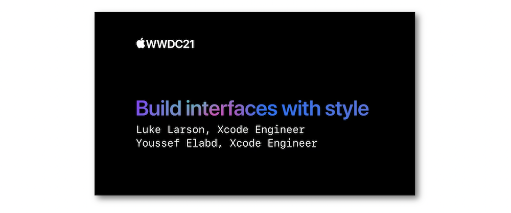
"Discover how you can iterate upon your interfaces even more quickly when building your apps. Learn how you can modernize your UI with the latest button styles and table view cell content configurations, both of which give you greater control directly inside of Interface Builder. We'll show you how you can preview common customizations with accessibility overrides — such as dynamic type size and increased contrast — all without leaving the canvas. We'll also take you through hierarchical symbols to easily add a splash of color to reinvigorate your app. Whether you're just starting out or have been developing apps for years, learn best practices for creating great interfaces with tips and tricks sprinkled along the way."
The various contents of this video are indicated hereunder:
Most of the illustrations are parts of the Apple presentations and may be available at the Resources section inside the Overview sheet of each video.
Hereafter, the underlined elements lead directly to the playback of the WWDC video at the appropriate moment.
Xcode interface builder #
It's now possible to move the scenes in the outline view thanks to a drag and drop gesture.
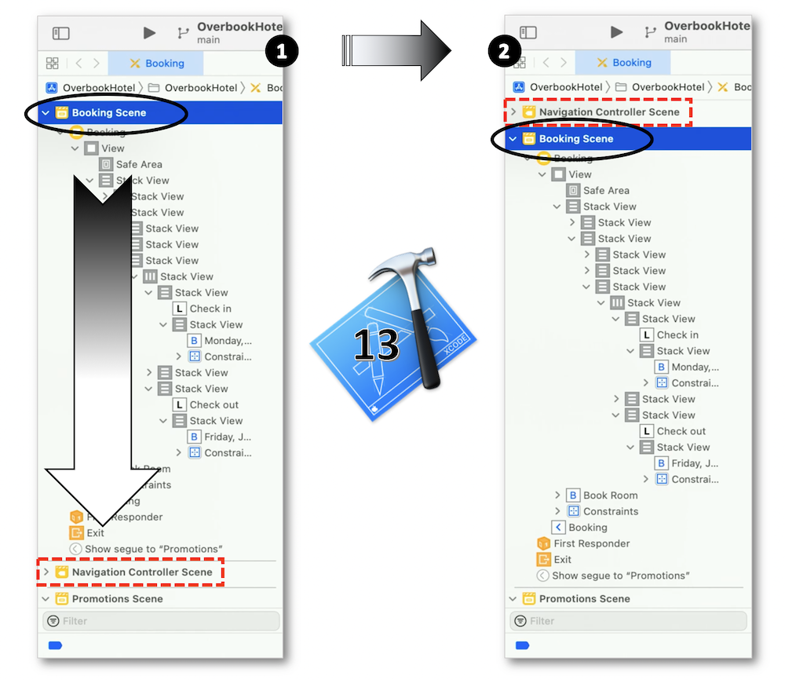
Significant improvements have been made to handle the constraints in the interface builder.
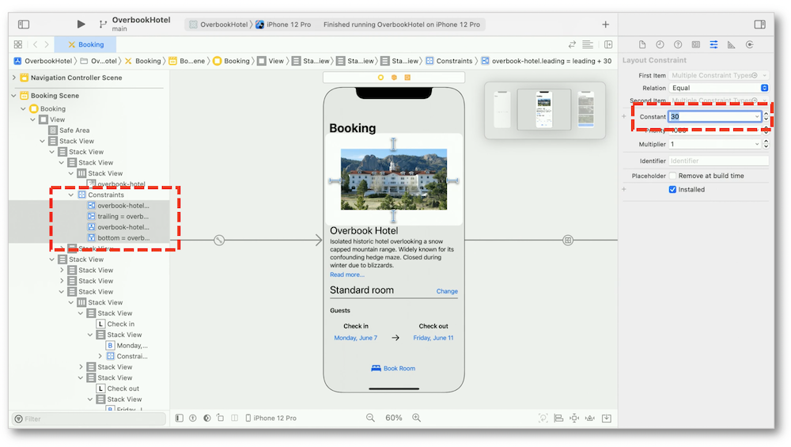
Button styles #
New preset button styles are added in the interface builder with a native adaptation to accessibility, the multiline titles and the Dynamic Type features.
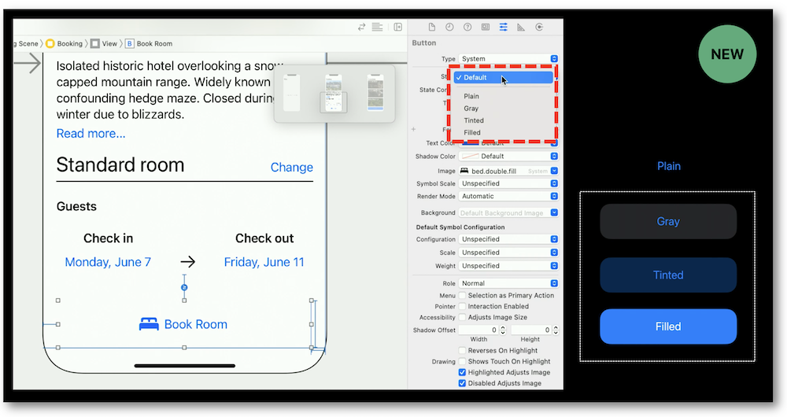
In order to customize the appearance of a button, many new properties have been introduced in Xcode 13.
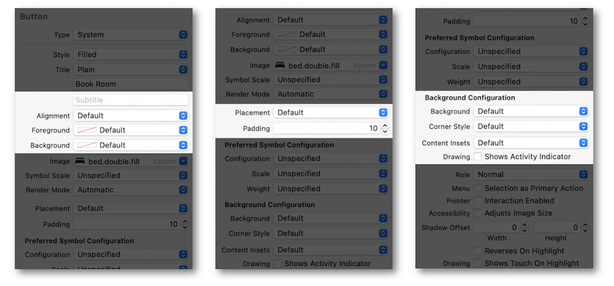
The corners radii tailor at the button magnification abiding by the dynamic style but remain at the same size with the fixed style.
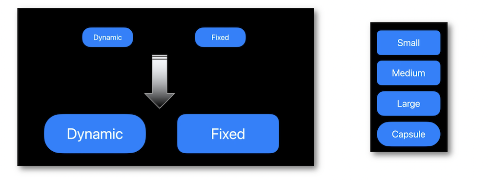
Regarding the button size, new preset sizes are introduced in the size inspector panel.
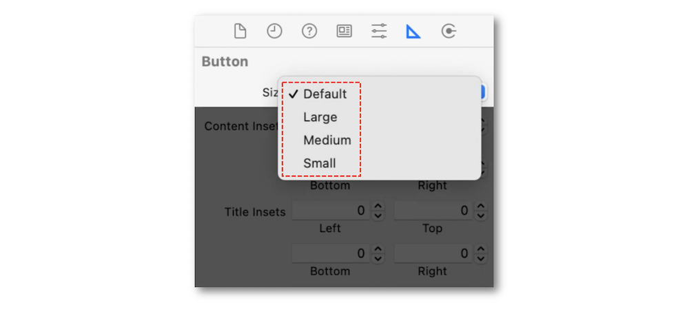
-
Adapt several tinted styles (transparent background).
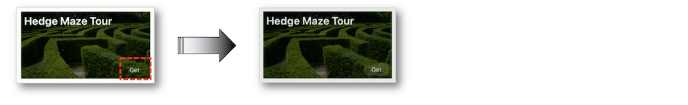 -
Add a pop-up button.
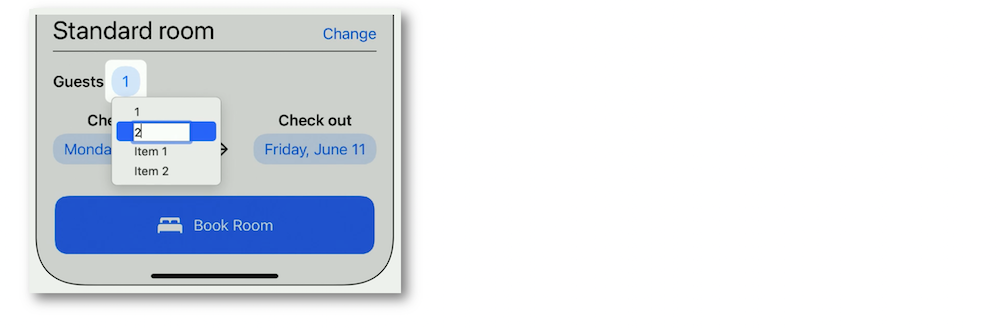
Table content styles #
This part is entirely explained by implementing the various features inside an app using the Xcode interface builder.
The cell content configuration styles enable a complete customization of the appearance providing concomitantly the Dynamic Type feature for free.
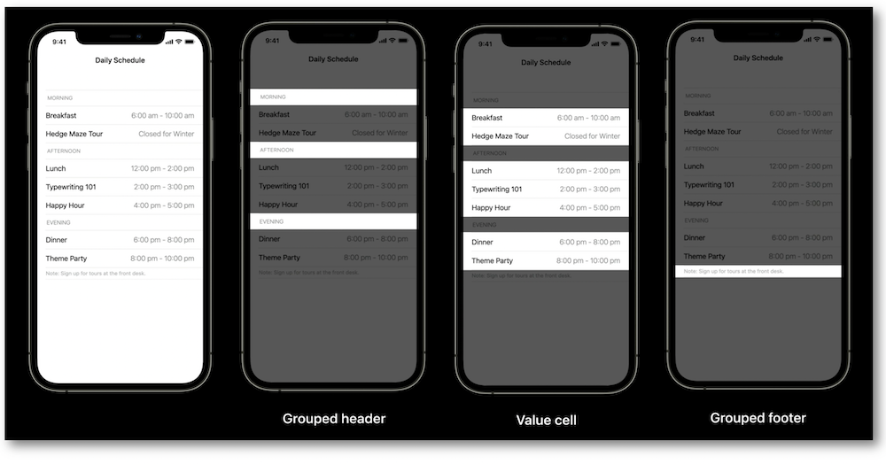
New in iOS 15, some symbols specifics and two new render modes enable to emphasize the depth to the symbols.
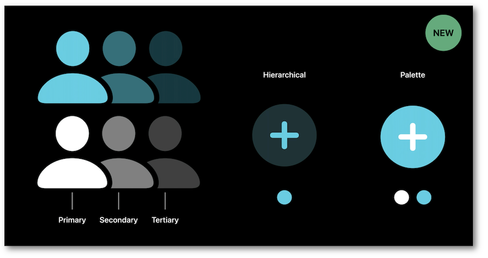
And last but not least, a brand new Xcode 13 feature relies on the new prediction behavior at design time.
Refinements dealing with the cells styling make the work effortless in the table views.
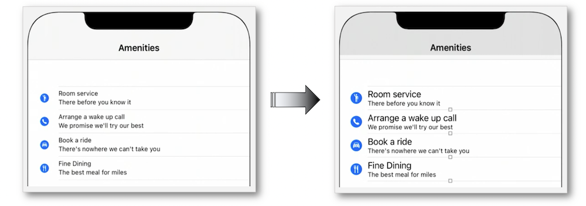
The Hierarchical rendering mode efficiently highlights the symbol's primary elements.
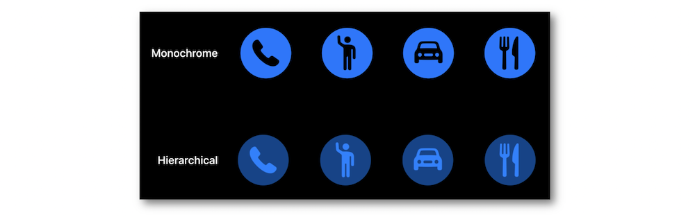
To adapt easily the desired mode, everything is set up in the Attributes Inspector panel.
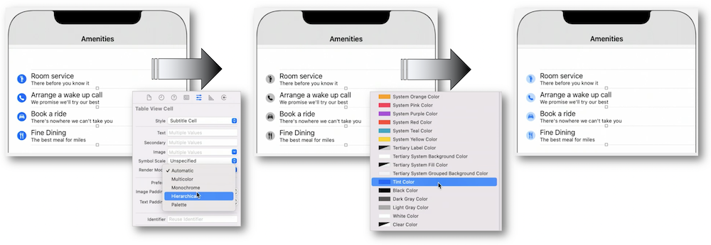
Instead of waiting for the launch app to notice the changes reagarding the accessibility modifications, Xcode 13 now enables to preview the accessibility settings at design time.
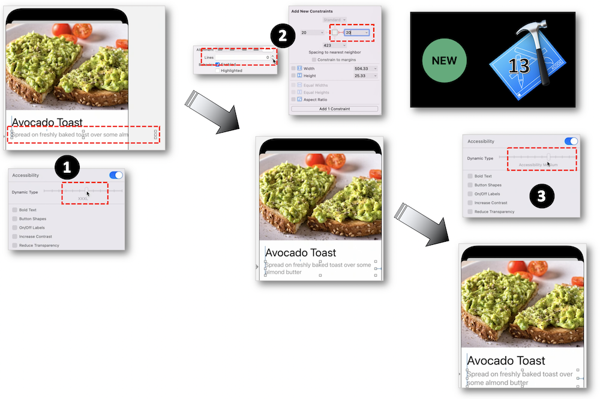